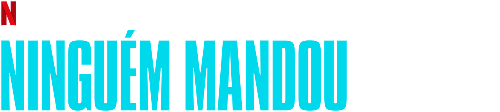
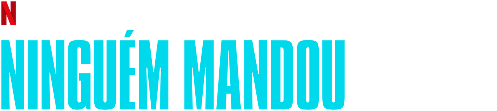

Ninguém Mandou
The Originals" é uma série de televisão que se desenrola no universo de "The Vampire Diaries". A trama concentra-se na família Mikaelson, composta por vampiros originais - Klaus, Elijah e Rebekah. A história se desenrola em Nova Orleans, onde os Mikaelson retornam para reivindicar o controle da cidade que ajudaram a construir.
Os conflitos familiares são o cerne da narrativa, destacando as complexas relações entre os membros da família. Elijah representa a lealdade e a nobreza, Rebekah busca amor e aceitação, enquanto Klaus lida com seus próprios demônios, incluindo sua natureza híbrida e maldições familiares.
Ao longo das temporadas, os Mikaelson enfrentam inimigos poderosos, incluindo bruxas, lobisomens e outros seres sobrenaturais. A série explora alianças, traições e lutas pelo poder enquanto a família tenta garantir sua sobrevivência.
Elementos românticos são incorporados, destacando os relacionamentos de Klaus, Elijah e Rebekah. Flashbacks revelam as origens dos Mikaelson e eventos significativos de suas vidas imortais.
Uma profecia que prediz a queda da família Mikaelson e o surgimento de uma ameaça desconhecida adiciona uma tensão adicional à trama. A existência de Hope Mikaelson, a criança milagrosa com sangue de vampiro, lobisomem e bruxa, desencadeia eventos cruciais na série.
A narrativa explora temas de redenção, sacrifício e perdão, levando a eventos que têm impacto duradouro na família Mikaelson e no mundo sobrenatural. "The Originals" é elogiada por sua rica mitologia, personagens complexos e reviravoltas emocionantes, oferecendo uma exploração única do universo sobrenatural.
Sinopse
InicioThe Originals (em português, Os Originais) é um spin-off produzido pela The CW e baseado na série norte-americana The Vampire Diaries. A história centra-se nos Vampiros Originais na cidade de Nova Orleans.
Lista de episódios de Ninguém Mandou
Inicio| Temporada | Episódios | Estreia da temporada |
|---|---|---|
| 1 | 10 | 14 de fevereiro de 2020 |
1ª temporada
InicioNinguém Mandou" segue a história do grupo DGM (Don't Get Mad), composto por quatro meninas com personalidades distintas, mas unidas pelo objetivo comum de se vingar de quem pratica bullying na escola. Kitty Wei é vista como a líder, buscando cumprir as expectativas dos pais. Bree Deringer é a rebelde do grupo, enquanto Margot Rivers desempenha o papel da "nerd indispensável". Olivia Heyes, apesar de ser considerada uma "patricinha", anseia por popularidade e se importa genuinamente.
O grupo ganha notoriedade ao organizar ações para combater intimidações e injustiças na escola. No entanto, a trama se complica quando uma pessoa é encontrada morta, e um bilhete com a sigla do DGM é descoberto. O enredo envolve um assassinato que leva a outros crimes, mas a série se destaca por sua abordagem esterilizada, com pouca violência, tensão contida e choques moderados. Apesar da gravidade dos eventos, a atmosfera é calculadamente controlada, lembrando, em alguns momentos, a leveza de séries como Hannah Montana. Essa abordagem peculiar confere à série uma singularidade interessante, pois consegue incorporar mortes, perseguições e interações com autoridades sem criar uma atmosfera agressiva.